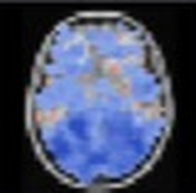

SubjectFocusedNearest to the focused subject, numberedSimilarity groupDrag to select · Shift adds · Alt removes. Arrow keys move between points; Enter focuses one.

sub-1033
sub-1012 · 4 of 3535 of 35 subjects placed · the 2D map keeps [value]% of the variation · [value]% of nearest neighbours kept on screen
One scale for every map
Values: nothing pinned yet
Inspector
sub-1012focused subject
Imagemaps/same_item/sub-1012groupoldersexFDistance from mean[value] · [rank] of 35Value at crosshair[value]